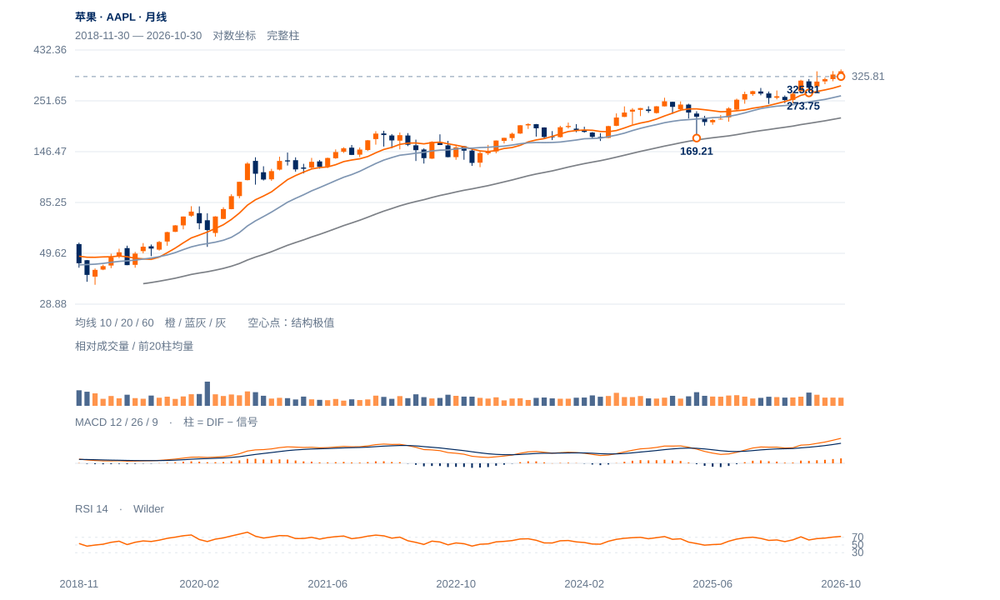

强势待确认
未来1—5日偏向高位消化，345.34承接未破，355.38上方的连续保持仍待完成。
未来1—5日偏向高位消化，345.34承接未破，355.38上方的连续保持仍待完成。
未来2—6周偏向强势整理后再试高，先核345.34及338.30承接。355.38原两日过滤通过并保持359.37上方，才提高向上扩展判断；失守345.34则短线优势降级。
未来1—3个月长期方向仍偏强，325.81是较日线关口更重要的结构锚。连续两周收低325.81将转为更深回撤，300附近旧谷与295完整10月均衡提供下一层参照；未有新结构时不编造无阻力价格目标。

展开图表 ↗2022低125.87、2025年4月169.21、今年3月245.51的大低持续抬高；10月月收344.63高于10/20月均衡295.36/265.49，月RSI72.37。现价354.88继续处于长线新高区域，结构明显优于多数七姐妹；偏离10月均衡约20%，也意味着回撤风险不能只按几美元的日线过滤衡量。
6月273.75、7月300、10月325.81逐级抬高，7月344.57与9月345.34高区已经被价格越过。当前11月359.37盘中高后弱收，355.38原两日条件没有通过，是高位推进不足的警告；只要325.81等同级低谷未破，不应把单日长上影升级为长期顶部。
长期较高低点维持，价格处新高区；355.38原两日保持尚未通过。量缩与OBV偏弱使当前更适合检验突破质量。
11日收355.63首次高于355.38，12日盘中359.37却收354.88；连续两日收盘过滤未成立。
12日收盘位置9.5%、量比0.65，11日上涨量比也仅0.70；20日OBV方向余额为负，提示突破需求仍需后续证据。
收盘高于20/50/200日线345.51/338.48/300.76，完整周RSI63.54；20日绝对涨3.77%，相对纳指比值升9.28%，当前不是全面走弱。
重新连续两个完整日收高于355.38；359.37作为本次盘中上试锚点另外跟踪。
原345.34日收条件不变；338.30为更下层近端波谷。
高位需求并未随新高扩张，量比偏低且OBV反证尚在；若345.34失守后反抽失败，当前强势整理可能演变为更大级别回撤。
| 周期 | 最后完整柱 | 图示柱数 | RSI14 | ATR14 | MACD柱 |
|---|---|---|---|---|---|
| 日线 | 2026-11-12 | 185 | 59.68862 | 8.39188 | 0.71861 |
| 周线 | 2026-11-06 | 156 | 63.54337 | 17.14273 | 0.27894 |
| 月线 | 2026-10-30 | 96 | 72.37354 | 29.10039 | 6.21495 |
美股价格拆股调整、不含分红再投资。完整周线至11月6日；11月进行中。指数成交量与全成分广度受限。